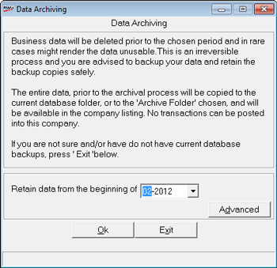
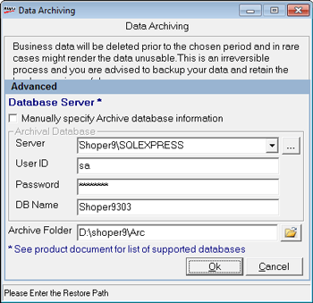

As Shoper data accumulates, it occupies space and affects performance. Hence there is a need to archive the data which are not relevant. This option is used to archive Shoper data which are not required for use.
How to reach: Setup > Supervisory Functions > Database Archival
The Login window is displayed to confirm the supervisor's login ID and password.
User ID: Enter supervisor’s login ID (Default is super).
Password: Enter supervisor’s password (Default is nothing).
The Data Archiving window is displayed.

Retain data from the beginning of: This is the date cut-off for data archival.
Caution: Data recorded prior to this date will be archived and will not available or usable. Please generate the backup of the data for that period without fail.
Advanced: The details of the Server, UserID, Password and Database Name are displayed by default. Type the path details where the Archive Folder will be saved.

Manually specify Archive database information: Activate this option to type the required details manually.